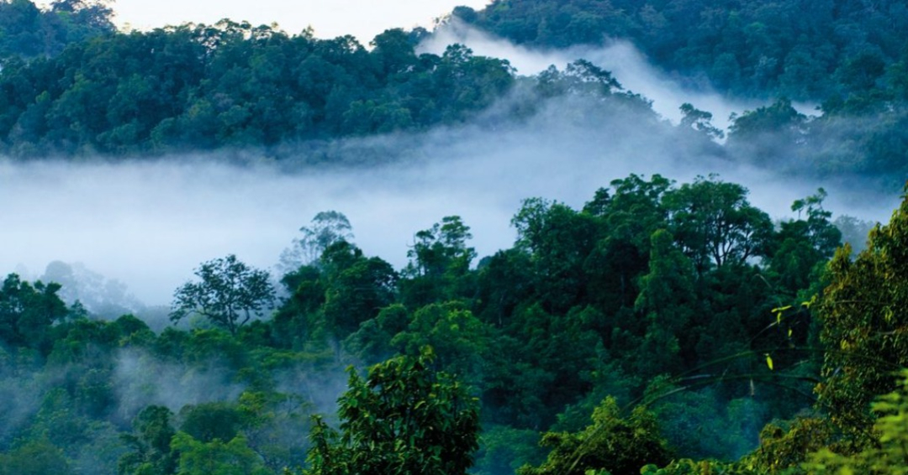
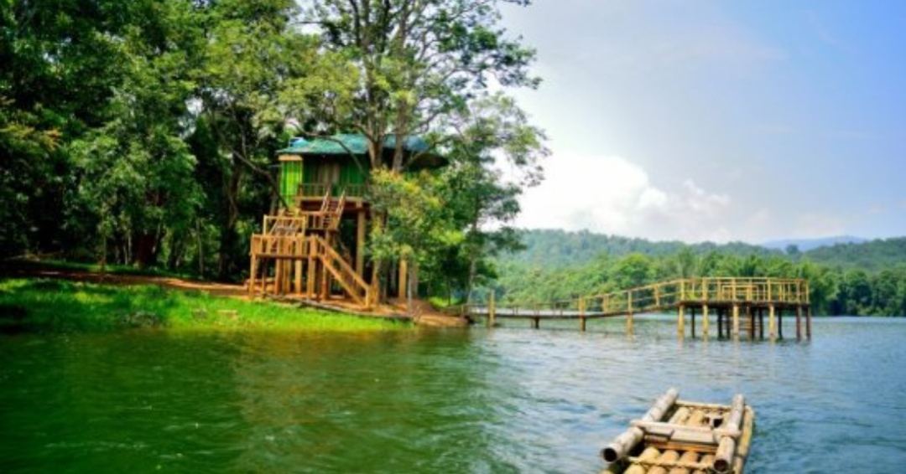

Palakkad lies near a wide low gap or pass in the Western Ghats mountain ranges that separates Kerala from Tamil Nadu. Consequently the city is a major conduit for travel between the two states. Palakkad is 4,480 km² and the population is 2,617,072.
Palakkad is the land of Palmyras and Paddy fields. It is the chief granary of Kerala, often called the Gateway of Kerala. Palakkad lies at the foot of the gigantic Western ghats on the border of Kerala. This city surrounded by mountains, forests and fertile valleys, rivers and mountains streams are rich in flora and fauna.
Malayalam is widely spoken language as the rest of Kerala. However Palakkad is close to the Tamil Nadu border and people understand and speak Tamil well. You won't be very far from a person who speaks perfect English or Hindi just in case you need one.



Parambikulam is one of the premier Tiger Reserves of India and is endowed by nature in terms of species, habitat and ecosystem diversity, characterized by functional human-ecological affinities. It stood 7th in the country in terms of Management Effectiveness in the 2018 Assessment (among 50 Tiger Reserves in the country). Parambikulam is a well-protected part of the Nelliampathy - Anamalai sub unit of the Western Ghats and is buffered by ecologically similar forests of other Forest Divisions and Protected Areas of Kerala and Tamil Nadu.